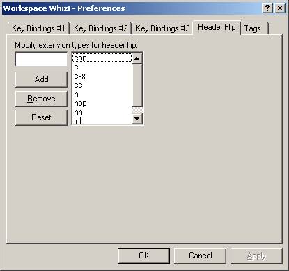

The Header Flip preferences allow assignment of all file extensions considered for a header flip. The header flip is performed according to the order of the extensions in the dialog.
The edit field is used to enter new extensions. The Add button will add the extension being edited to the end of the extension list. The Remove button will remove the currently selected extension. The Reset button will restore the Workspace Whiz! defaults.